HIT‘N'MISS 19 TH JUNE 2009
Up for it were:
Sharp Shooters : |
|
|
Clay Clowns :
|
|
Wild Bill Hickok |
Keithee |
|
Al Capone
|
Downsized Dave |
Wyatt Earp |
Firefighter Ax |
|
Dead Eye Dick |
Dasher |
John Wayne |
Fingers Mark |
|
Bugsy Malone |
Granpop Bill |
Buffalo Bill |
Craigee |
|
David Crockett |
Mick - Downsized Dave Senior |
Pedro |
|
Butch Cassidy |
DCeen |
|
Billy the Kid |
Spikelet (failed to show) |
|
Doc Holliday |
Richee |
Observers:
Yup and JayCee, joined eventually by Mothy.
Al Capone, Dead Eye Dick, Bugsy and David Crockett were first aboard at Kingsway, picking up Buffalo Bill and Doc Holliday at Penkridge on route. The remaining outlaws met at the Westbury admiring the new decking which extended over half of the large car park. It was as well JayCee wasn't up for the shoot. He'd walked past 200sqm of decking outside the pub and never noticed it.
Jessie James recalled how, when he was a young wiper snapper, his aim with a spud gun was so bad he opted to throwing brussel sprouts instead; and still missed. Mmmmmm. Wonder if they've got any left handed shotguns he pondered; I might stand half a chance.
The observers enjoyed their beer as the rest looked on longingly, until Bill the driver turned up. Sorry but alcohol's not allowed for shooting participants. JayCee gleefully downed his pint first until it was pointed out that he'd been there for 2 hours with the same drink.
Ringer David Crockett admitted to having his own guns and used to be a dab hand at shooting. Perhaps we should blindfold him someone suggested??
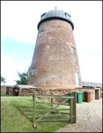The bus wound its way through Eccleshall and along a few windy country lanes under Yup's directions to Rowley Gun Club at Wetwood (ST21 6TJ). Who was organising this trip he wondered.
The club was a bit out of the way as you'd expect, with only an impressive converted windmill situated anywhere near. Hillbillies, Tony and Colin, were waiting to greet us, offering us tea or coffee on arrival.
Rich decided to pay up front, a bold move, especially as we hadn't even finished the biscuits. DCeen choked on his coffee as he realised the cost was £35 each, and hastily grabbed another couple of ginger nuts to compensate. Not JayCee's it must be added.
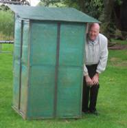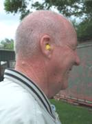
Hillibillie Tony gathered us together for instructions outside, blowing a few hundred worms out of the ground and frightening everyone to death. JayCee ran for cover. To follow he asked for a volunteer to shoot him from point blank range and DCeen ‘bit the bullet' and immediately stepped forward. ‘Look into my eyes, look into my eyes', he instructed, and cockily smacked the end of the rifle into DCeen's shoulder. Reeling back, Hillibillie Tony reliably confirmed that the actual recoil you would expect when actually firing, would be no worse. Thank goodness for that !!
After we'd all been deafened, the Hillibillies handed out some ear plugs. It was too late for Bugsy Malone. His hearing aid had packed up at the first bang and no matter how loud Hillibillie Tony tried to explain the procedures; he couldn't hear a damn thing. ‘Just mount it and see how it feels', someone shouted. Now it's some time since he heard that request but it bought back fond memories and a huge smile to his face. He thought he'd ‘pulled'. In fact he had !!
| 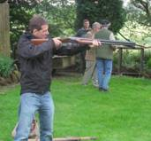 | 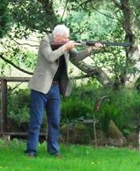 | 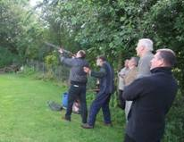 |
| 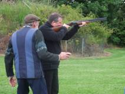 | 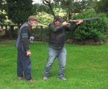 | 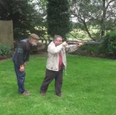 |
| 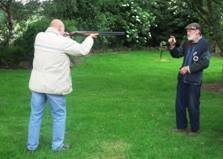 | 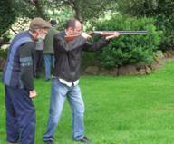 | 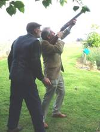 |
For reasons unknown, the brilliant weather forecast by Yup turned foul for a ten minute spell as the party was split into the 2 groups of Clay Clowns and Sharp Shooters. The shooting began, with Yuppy and JayCee finding refuge in a shed. Some fine shooting talent was displayed with clays being smashed left right and centre. Let in the capable hands of Doc Holliday and the Hillibillies, Yup and JayCee got picked up by Mothy and spent an hour or so at The Star at Copmere until the first group had finished and summonsed a taxi. Despite numerous attempts being made there were none to be had. They wanted shooting. Other than getting Bill back with his minibus, options ran out, until a lifesaving butterfly, Mothy's wife Marg, arrived to our rescue after a long couple of day's hard slog at Leeds .
With no other options available, she kindly offered to ferry the lads in 2 or 3 short bursts into Eccleshall, and set off to collect the first group.
The first to Eccleshall gathered in the Bell Inn, a couple of doors down from the London House Balti, which we were booked into at 8.30. It was to be some time before we could all group, as the butterfly gave up in despair, unable to find the remaining lads who had set off on foot on one of the several 5 mile routes back to Eccleshall. With updates being relayed to the lads in the pub both the indian and the minibus were repeatedly put back.
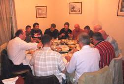 It was to be an even longer ‘Pull' back for the lads. Tired and weary, and ready for a pint, they eventually arrived and after some welcome refreshments we assembled in London House just before 10. The shoot was intended to take around a couple of hours, but had exceeded the mark by at least an hour. The Sharp Shooters were obviously faster learners, finishing at 7.30 whilst the Clay Clowns finished some 15 minutes later. We sat at a large circular table upstairs and with Cobras and wine flowing and excellent food being provided, the memories of the walk back, which had almost turned out to be longer than an office walk, ebbed away.
Butch Cassidy complained that he'd got a small throbbing in his shoulder, hoping it would make its way around his body later. Wild Bill Hickok declared the night a non-chicken chat night, as there would definitely be no time to finish. ‘Believe me', he said, quite rightly, ‘we will not have time'. And he was right of course.
A toast was raised to the night's victor, David Crockett who had scored 37 hits. With time running out he didn't quite get time to buy everyone a celebratory ‘shot', but there's always next time.
Final scores were:
Sharp Shooters : |
|
Final Score |
|
Clay Clowns : |
|
Final Score |
Wild Bill Hickok |
Keithee |
20 |
|
Al Capone |
Downsized Dave |
24 |
Wyatt Earp |
Firefighter Ax |
28 |
|
Dead Eye Dick |
Dasher |
26 |
John Wayne |
Fingers Mark |
23 |
|
Bugsy Malone |
Granpop Bill |
24 |
Buffalo Bill |
Craigee |
27 |
|
David Crockett |
Mick - Upsized Dave Senior |
37 |
Jessie James |
Pedro |
15 |
|
Butch Cassidy |
DCeen |
25 |
Billy the Kid |
Spikelet (failed to show) |
- |
|
Doc Holliday |
Richee |
30 |
We finished promptly at 11.15 and Bill arrived ‘bang' on.
It was a cracking evening, mainly hit'n'miss, especially for Jessie James who'd have been better off throwing brussel sprouts)
Yupmeister
(enjoy yer baltis) www.baltibugle.co.uk